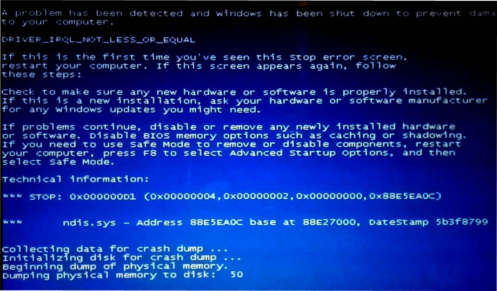
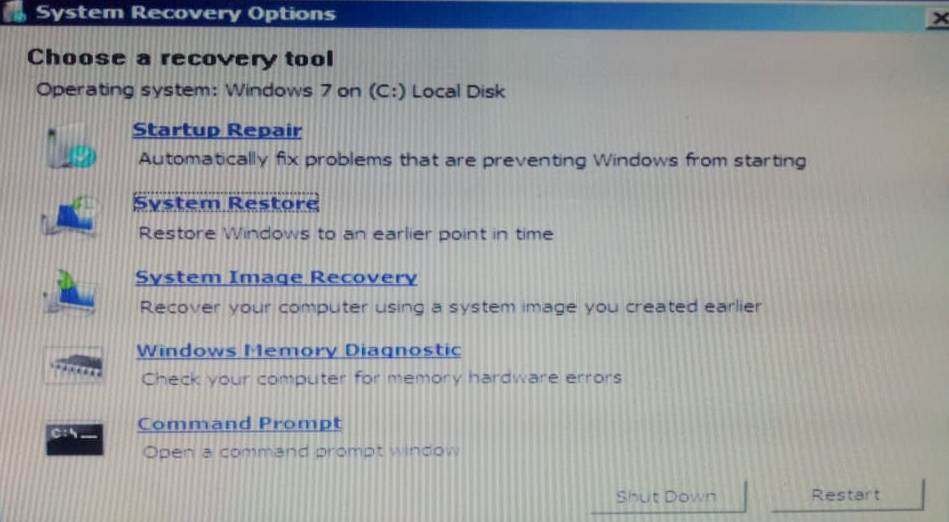

"Handle Blue Screen Error."
Error type: Blue screen error.
Error message: 0x000000D1
Reasons: Virus attack. / Shortage of RAM. / Usage of heavy softwares.
Screen may look similar to.
STEPS TO RESOLVE:-
- Press F8 while system bootup.
- Select "Repair Your Computer."
- A window with "Choose a recovery tool" will pop-up, seen as - 
- Try every option in that list till the error get resolved.
- Windows Memory Diagnostic.
- Startup Repair.
- System Restore.
- System Image Recovery.
- If error persists -
- Repeat step 1
- Select "Last Known Good Configuration (advanced)"
This will boot your system similar to that stage when it was successfully loaded last time.
- Start doing it in order as -